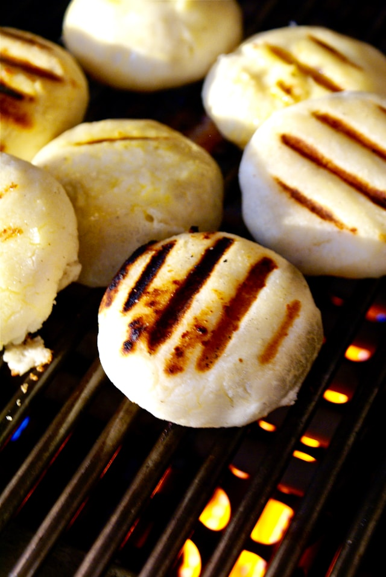

Arepas Recipe!

Arepas depending on who you ask are from Venezuela or Colombia
Ingredients
- 2 cups of pre-cooked cornmeal (Harina PAN)
- 2 1/2 cups of warm water
- 1 teaspoon of salt
- 1 tablespoon of oil or butter (optional)
Instructions
- In a large bowl add water and the precooked cornmeal (Harina PAN)
- Add salt and stir until you get a pre-mix with a texture that is not too soft or too firm
- Usually arepas are rounded but can make them whatever shape you like
- Heat the cooking pan medium heat
- Add a little oil or butter to the pan
- Place the arepas on the pan and cook for about 5-7 minutes on each side
ENJOY YOUR MEAL!
To go back to the home page click here